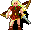

Fanamor¶Where to find Fanamor: Crossroads Guardhouse: Crossroads, Fallhaven: Fallhaven derelict 2, Fallhaven: Fallhaven derelict 2 t
{ .sprite }
| Type | NPC/Enemy (can be spoken to, but can also be fought) |
| Found in | Crossroads Guardhouse, Fallhaven |
| Class | Humanoid |
| HP | 1 |
| XP when defeated | 1 |
| Entry ID | fanamor |
| Introduced | v0.7.0 or earlier |
Can be fought
This entry can be talked to, but it can also become an opponent: a conversation with this character can end in combat (a dialogue branch leads to a fight).
No combat statistics are defined for this entry in the game data. Where the story leads to a fight, the game normally uses a separate hostile entry.
Locations¶
| Map | Region | Up to | Notes |
|---|---|---|---|
| Crossroads | Crossroads Guardhouse | 1 | – |
| Fallhaven derelict 2 | Fallhaven | 1 | Appears later, during a quest |
| Fallhaven derelict 2 t | Fallhaven | 1 | Appears later, during a quest |
Quests¶
- Thief apprentice: stages 35, 40, 45, 51, 55
Dialogue simulator¶
Set your quest stages and items, then talk to Fanamor. Same rules as the game: same checks, same options, same effects.
Rules verified against v0.8.18 game code (ConversationController.java) and dialogue data.
Dialogue (39 lines)
Exactly as in the game files. Each line appears once; links jump to where a choice leads.
fanamor_selector (silent check: the first matching branch below is taken)
- branch 1 (if reached stage 55 of Thief apprentice) → fanamor_guild_10
- branch 2 (if reached stage 35 of Thief apprentice; NOT killed 1× Feygard scout) → fanamor_guild_5a
- branch 3 (if 120 rounds passed since timer “Fanamorbleeding”; reached stage 45 of Thief apprentice) → fanamor_guild_0
- branch 4 (if reached stage 45 of Thief apprentice) → fanamor_guild_8
- branch 5 (if killed 1× Feygard scout; reached stage 40 of Thief apprentice) → fanamor_guild_5
- branch 6 (if reached stage 35 of Thief apprentice; NOT reached stage 40 of Thief apprentice) → fanamor_guild_4
- branch 7 → fanamor
fanamor_guild_10 Fanamor: “Hello, friend! Thank you for all you've done for me.”
- “It was nothing. Bye.” → conversation ends
- “It's my job. Nice to see you survived those anklebiters ...” → conversation ends
- “Hmm, maybe you can help me?” (if reached stage 150 of Troubling times; NOT reached stage 180 of Troubling times) → fanamor_tt
fanamor_guild_5a Fanamor: “Watch out! Behind you!”
- “What ...?” → conversation ends
fanamor_guild_0 Fanamor: “(You look away when you see the corpse of Fanamor. Anklebiters probably had something to do with this horrible event.)” — effects: sets stage 51 of Thief apprentice
- “[Bury the corpse.]” → fanamor_guild_0a
fanamor_guild_8 Fanamor: “Have you brought me that bandage?”
- “Yes, I have it!” (if hand over 1× Bandage; reached stage 50 of Thief apprentice) → fanamor_guild_9a
- “I'm still searching.” → fanamor_guild_9b
fanamor_guild_5 Fanamor: “Wow, you ... you really got rid of him ....”
- “Did you doubt me?” → fanamor_guild_6
- “Yes, even though he was strong, as we can expect of Feygard soldiers ...” → fanamor_guild_6
fanamor_guild_4 Fanamor: “Tsch ... I ... cannot ... You kid, protect the book!”
- Next → feygard_scout_3
fanamor Fanamor: “Yikes! You scared me there.”
- Next → fanamor_1
fanamor_tt Fanamor: “Sure. I heard you're looking for Sly Seraphina.”
- “Eavesdropping is not nice.” → fanamor_tt_10
- “Yes. Do you have any idea where she might be hiding?” → fanamor_tt_20
fanamor_guild_0a (silent check: the first matching branch below is taken) — effects: removes monsters from crossroads
- branch 1 → NPC leaves
fanamor_guild_9a Fanamor: “(You help Fanamor put the bandage on the wound) ... I think I will be able ... to move in a few minutes. See you at the Guild. Thank you kid.” — effects: sets stage 55 of Thief apprentice, removes monsters from crossroads, spawns monsters on fallhaven_derelict2
- “I'm glad to hear that. Bye.” → NPC leaves
- “Nothing for me.” → NPC leaves
fanamor_guild_9b Fanamor: “Hurry up! I do not have much time ...”
fanamor_guild_6 Fanamor: “Argh ... The Feygard Scout hit me badly. I have not much time ... I am bleeding very heavily.”
- “I don't think so.” → fanamor_guild_7a
- “Can I help?” → fanamor_guild_7b
feygard_scout_3 Feygard scout: “(Grabs the book) What have we here? A lost kid trying to do business with this scum, hah? You are under arrest!” — effects: sets stage 40 of Thief apprentice
- “Not without a fight!” → fight starts
- “How dare you! Prepare to die, useless soldier!” → fight starts
- “For the shadow!” → fight starts
fanamor_1 Fanamor: “I was just strolling through these woods ... eh ... killing anklebiters.”
- Next → fanamor_2
fanamor_tt_10 Fanamor: “We are thieves - already forgotten?”
- “So can you help me?” → fanamor_tt_20
- “Nevertheless, one can still maintain one's good manners.” → fanamor_tt_12
fanamor_tt_20 Fanamor: “Of course. In fact, I know exactly where she's hiding right now.”
- “Great. That will save me a lot of running around.” → fanamor_tt_22
fanamor_guild_7a Fanamor: “Yes, I am. I have no time for jokes!”
- Next → fanamor_guild_7b
fanamor_guild_7b Fanamor: “I need a bandage quickly, or I will never return to the guild house. A priest might help ...” — effects: sets stage 45 of Thief apprentice, starts timer “Fanamorbleeding”
- “Yeah, OK.” → conversation ends
- “I will find a bandage for you, don't worry.” → conversation ends
fanamor_2 Fanamor: “Yes. Killing them was what I was doing. Not running away from them. No, killing them.”
- Next → fanamor_3
fanamor_tt_12 Fanamor: “Phh.”
fanamor_tt_22 Fanamor: “Here's how we do it: You can guess, and I'll tell you whether it's true or not.”
- Next → fanamor_tt_24
fanamor_3 Fanamor: “sigh”
- Next → fanamor_4
fanamor_tt_24 Fanamor: “And each tip only costs you 100 gold pieces.”
- “I should have known.” → fanamor_tt_26
fanamor_4 Fanamor: “Oh, who am I kidding. OK, I was trying to get through the forest here and got ambushed by these anklebiters.”
- Next → fanamor_5
fanamor_tt_26 Fanamor: “You already know that she is near a town.”
- “But which one?” → fanamor_tt_30
fanamor_5 Fanamor: “I won't leave until nightfall, when they can't see me anymore and I might be able to sneak back.”
- Next → fanamor_6
fanamor_tt_30 Fanamor: “Guess!”
- “Vilegard?” (if pay 100 gold; faction “tt_hide” = 6) → fanamor_tt_40
- “Vilegard?” (if pay 100 gold; NOT faction “tt_hide” = 6) → fanamor_tt_50
- “Brimhaven?” (if pay 100 gold; faction “tt_hide” = 5) → fanamor_tt_40
- “Brimhaven?” (if pay 100 gold; NOT faction “tt_hide” = 5) → fanamor_tt_50
- “Prim?” (if pay 100 gold; faction “tt_hide” = 4) → fanamor_tt_40
- “Prim?” (if pay 100 gold; NOT faction “tt_hide” = 4) → fanamor_tt_50
- “Loneford?” (if pay 100 gold; faction “tt_hide” = 3) → fanamor_tt_40
- “Loneford?” (if pay 100 gold; NOT faction “tt_hide” = 3) → fanamor_tt_50
- “Stoutford?” (if pay 100 gold; faction “tt_hide” = 2) → fanamor_tt_40
- “Stoutford?” (if pay 100 gold; NOT faction “tt_hide” = 2) → fanamor_tt_50
- “Sullengard?” (if pay 100 gold; faction “tt_hide” = 1) → fanamor_tt_40
- “Sullengard?” (if pay 100 gold; NOT faction “tt_hide” = 1) → fanamor_tt_50
- “Oh, I'm running out of gold.” (if NOT have 100 gold) → fanamor_tt_34
- “Enough. I think you don't know yourself.” → fanamor_tt_32
fanamor_6 Fanamor: “This is my hiding spot! Now leave me.”
- “Umar sent me with the words "You are no one.No one knows you.No one has seen you." Now give me the journal please.” (if reached stage 30 of Thief apprentice) → fanamor_guild_1
fanamor_tt_40 Fanamor: “Hey, that's right!”
- “Thank you for your help.” → fanamor_tt_60
fanamor_tt_50 Fanamor: “Nope - 100 gold. Try again ...”
- Next → fanamor_tt_30
fanamor_tt_34 Fanamor: “No problem. I can wait.”
fanamor_tt_32 Fanamor: “You are so smart. I'm sorry I tried.”
fanamor_guild_1 Fanamor: “Finally! I was getting tired of waiting here killing these beasts ...”
- Next → fanamor_guild_2
fanamor_tt_60 Fanamor: “Thanks for the gold. But don't tell her that I betrayed her.”
fanamor_guild_2 Fanamor: “Take this. All I've seen is written here ...” — effects: sets stage 35 of Thief apprentice, spawns monsters on crossroads
- Next → feygard_scout_1
feygard_scout_1 Feygard scout: “Halt! You have been caught!”
- Next → fanamor_guild_3
fanamor_guild_3 Dummy NPC: “In the blink of an eye, Fanamor starts attacking the scout.”
- Next → feygard_scout_2
feygard_scout_2 Feygard scout: “Argh ... damned trash, take this! (His sword swings quickly, and severely wounds Fanamor)”
- Next → fanamor_guild_4
Version history¶
| Version | Change |
|---|---|
| v0.7.0 | Present in v0.7.0 (earliest release tracked) |
| v0.7.2 | Dialogue: 3 lines changed · text: “I was just strolling through these woods .. eh .. killing Anklebiters.” → “I was just strolling through these woods ... eh ... killing anklebite…” · text: “Oh, who am I kidding. Ok, I was trying to get through the forest here…” → “Oh, who am I kidding. OK, I was trying to get through the forest here…” |
| v0.7.8 | Movement: added (none) Conversation changed Dialogue: 19 lines added, 1 line changed |
| v0.7.13 | Dialogue: 2 lines changed · text: “I need a bandage quickly, or I will never return to the guild house.” → “I need a bandage quickly, or I will never return to the guild house. …” |
| v0.8.13 | Dialogue: 13 lines added, 1 line changed |
Verified against v0.8.18 and every earlier release back to v0.7.0 (game data compared release by release).
Technical information
| Entry ID | fanamor |
| Spawn group | fanamor |
| Loot table | – |
| Conversation | fanamor_selector |
| Faction | – |
| Movement | none |
| Icon | monsters_men:7 |
| Defined in | res/raw/monsterlist_v0610_npcs1.json |
Raw data:
{
"id": "fanamor",
"name": "Fanamor",
"iconID": "monsters_men:7",
"monsterClass": "humanoid",
"movementAggressionType": "none",
"spawnGroup": "fanamor",
"phraseID": "fanamor_selector"
}
How the XP value is calculated
The game computes each enemy's experience value when it loads the data (MonsterTypeParser.java):
XP = ⌈(attacks per turn × attack chance × average damage × (1 + critical skill × critical multiplier) × 3 + HP × (1 + block chance) + 9 × damage resistance) × 0.7⌉
Percentages are used as fractions (e.g. 60% = 0.6). Enemies whose attacks inflict a condition are worth 50 XP more. The More Exp skill adds a percentage on top.
Community notes¶
Written by players, not generated from game data. Observations: what players notice in-game · Lore: the in-world story · Trivia: real-world facts, references, development history · Theory / speculation: unconfirmed ideas; may just be unfinished content
Observations¶
No notes yet. Contributions are welcome: add a note.
Lore¶
No notes yet. Contributions are welcome: add a note.
Trivia¶
No notes yet. Contributions are welcome: add a note.
Theory / speculation¶
No notes yet. Contributions are welcome: add a note.
Data from v0.8.18